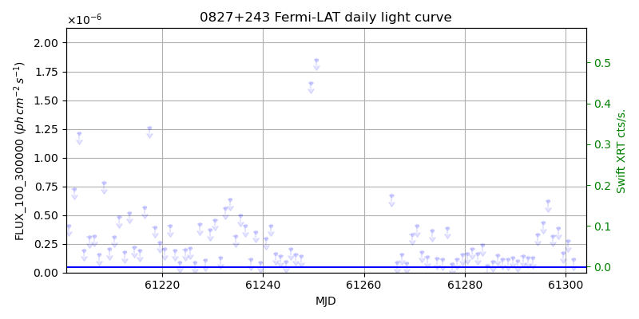
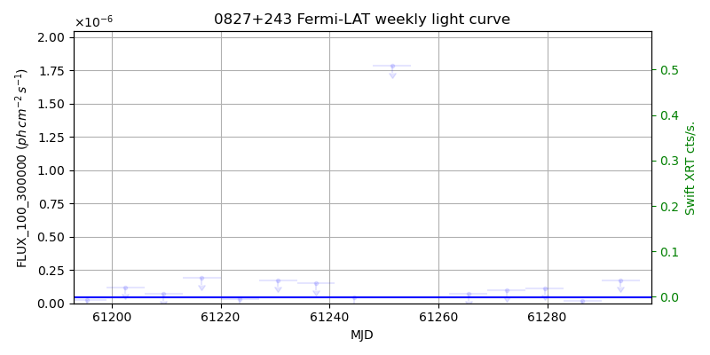
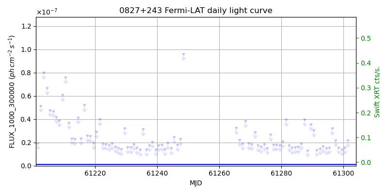
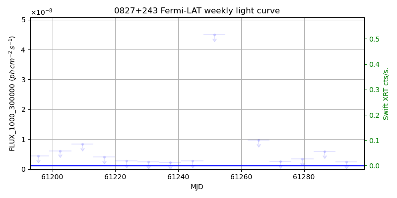

LAT Lightcurve site: https://fermi.gsfc.nasa.gov/ssc/data/access/lat/msl_lc/source/0827p243
Swift site: https://www.swift.psu.edu/monitoring/source.php?source=QSOB0827+243
NED: Query
Time of last update of this page: UT: 2026-09-19 15:19 (MJD: 61302.639)
| Property | Value |
|---|---|
| R.A. | 8:29:57.60 |
| Dec. | 24:13:12.0 |
| z | 0.939 |
| 3FGL SpectrumType | PowerLaw |
| 3FGL PL Index | 2.63 |
| 3FGL Flux_100_300000 | 4.63e-08 1 / (s cm2) |
| 3FGL Flux_1000_300000 | 1.09e-09 1 / (s cm2) |
| 3FGL Flux >200 GeV | 1.97e-13 1 / (s cm2) |
| 3FGL Extrap. Crab >200 GeV | 0.00 |
| 3FGL Flux After EBL Absorption >200GeV | 4.48e-15 1 / (s cm2) |
| 3FGL EBL Crab Fraction >200GeV | 0.00 |

| MJD | dMJD | Flux | dFlux | Frac3FGL | FracCrab>200GeV | EBLFracCrab>200GeV |
|---|---|---|---|---|---|---|
| 61297.50 | 0.50 | 3.19e-07 | 0.00e+00 | 0.00 | 0.00 | 0.00 |
| 61298.50 | 0.50 | 3.88e-07 | 0.00e+00 | 0.00 | 0.00 | 0.00 |
| 61299.50 | 0.50 | 1.74e-07 | 0.00e+00 | 0.00 | 0.00 | 0.00 |
| 61300.50 | 0.50 | 2.74e-07 | 0.00e+00 | 0.00 | 0.00 | 0.00 |
| 61301.50 | 0.50 | 1.13e-07 | 0.00e+00 | 0.00 | 0.00 | 0.00 |

| MJD | dMJD | Flux | dFlux | Frac3FGL | FracCrab>200GeV | EBLFracCrab>200GeV |
|---|---|---|---|---|---|---|
| 61265.50 | 3.50 | 7.03e-08 | 0.00e+00 | 0.00 | 0.00 | 0.00 |
| 61272.50 | 3.50 | 1.00e-07 | 0.00e+00 | 0.00 | 0.00 | 0.00 |
| 61279.50 | 3.50 | 1.14e-07 | 0.00e+00 | 0.00 | 0.00 | 0.00 |
| 61286.50 | 3.50 | 2.03e-08 | 0.00e+00 | 0.00 | 0.00 | 0.00 |
| 61293.50 | 3.50 | 1.73e-07 | 0.00e+00 | 0.00 | 0.00 | 0.00 |

| MJD | dMJD | Flux | dFlux | Frac3FGL | FracCrab>200GeV | EBLFracCrab>200GeV |
|---|---|---|---|---|---|---|
| 61297.50 | 0.50 | 2.21e-08 | 0.00e+00 | 0.00 | 0.00 | 0.00 |
| 61298.50 | 0.50 | 1.58e-08 | 0.00e+00 | 0.00 | 0.00 | 0.00 |
| 61299.50 | 0.50 | 1.41e-08 | 0.00e+00 | 0.00 | 0.00 | 0.00 |
| 61300.50 | 0.50 | 1.59e-08 | 0.00e+00 | 0.00 | 0.00 | 0.00 |
| 61301.50 | 0.50 | 2.19e-08 | 0.00e+00 | 0.00 | 0.00 | 0.00 |

| MJD | dMJD | Flux | dFlux | Frac3FGL | FracCrab>200GeV | EBLFracCrab>200GeV |
|---|---|---|---|---|---|---|
| 61265.50 | 3.50 | 9.70e-09 | 0.00e+00 | 0.00 | 0.00 | 0.00 |
| 61272.50 | 3.50 | 2.62e-09 | 0.00e+00 | 0.00 | 0.00 | 0.00 |
| 61279.50 | 3.50 | 3.40e-09 | 0.00e+00 | 0.00 | 0.00 | 0.00 |
| 61286.50 | 3.50 | 5.92e-09 | 0.00e+00 | 0.00 | 0.00 | 0.00 |
| 61293.50 | 3.50 | 2.40e-09 | 0.00e+00 | 0.00 | 0.00 | 0.00 |
--------------------------------------------------------- Using user-supplied coords: 8:29:57.60 24:13:12.0 2000 --------------------------------------------------------- FLWO UT night of: 2026-09-20 Local Sid. @ Midnight: 23:32 Sunset (-15.0) (local, UT): 19:31 02:31 Sunrise (-15.0) (local, UT): 05:04 12:04 Moonrise (local, UT): Moonset (local, UT): 00:13 07:13 Moon phase: 0.64 --------------------------------------------------------- AzTime LSID UT Obj_el Obj_az Mn_el Mn_az Sep. --------------------------------------------------------- 19:31 19:03 02:31 -30.3 336.6 30.5 184.0 156.4 20:01 19:33 03:01 -32.5 344.3 29.7 191.5 156.6 20:31 20:03 03:31 -33.8 352.3 28.1 198.7 156.7 21:01 20:33 04:01 -34.2 0.6 25.8 205.5 156.9 21:31 21:03 04:31 -33.7 8.8 22.9 211.9 157.0 22:01 21:33 05:01 -32.2 16.8 19.4 217.8 157.2 22:31 22:03 05:31 -30.0 24.4 15.4 223.2 157.4 23:01 22:33 06:01 -27.0 31.4 11.0 228.1 157.6 23:31 23:04 06:31 -23.4 37.8 6.3 232.6 157.8 00:01 23:34 07:01 -19.2 43.7 1.5 236.7 158.0 00:31 00:04 07:31 -14.5 49.0 -2.6 240.5 158.2 01:01 00:34 08:01 -9.5 53.8 -9.5 244.1 158.4 01:31 01:04 08:31 -2.8 58.2 -15.1 247.4 158.7 02:01 01:34 09:01 1.6 62.2 -20.8 250.6 158.9 02:31 02:04 09:31 7.2 66.0 -26.6 253.6 159.2 03:01 02:34 10:01 13.1 69.5 -32.5 256.6 159.5 03:31 03:04 10:31 19.1 72.8 -38.4 259.6 159.8 04:01 03:34 11:01 25.3 76.1 -44.5 262.6 160.1 04:31 04:04 11:31 31.5 79.3 -50.5 265.8 160.4 05:01 04:34 12:01 37.8 82.6 -56.6 269.4 160.7 05:04 04:37 12:04 38.4 82.9 -57.1 269.7 160.7 --------------------------------------------------------- Dark hours >55 deg.: 0.00